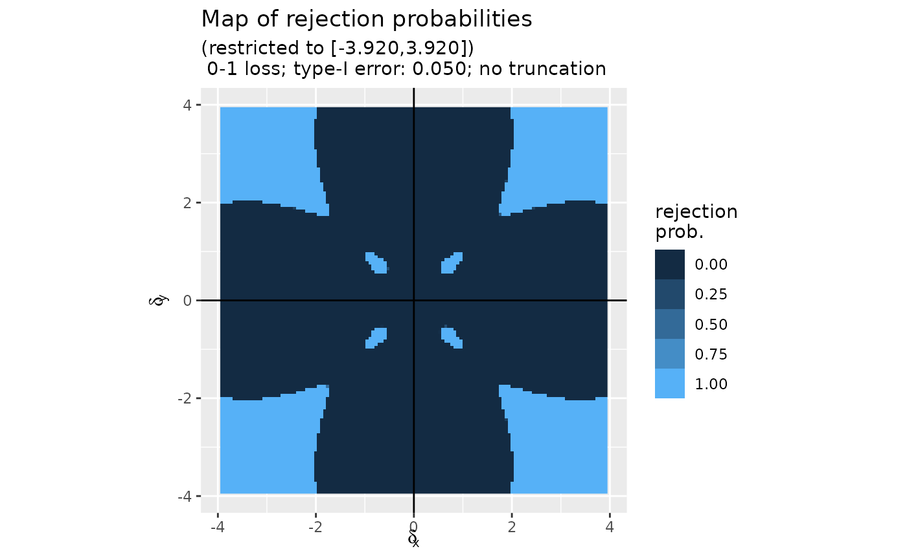
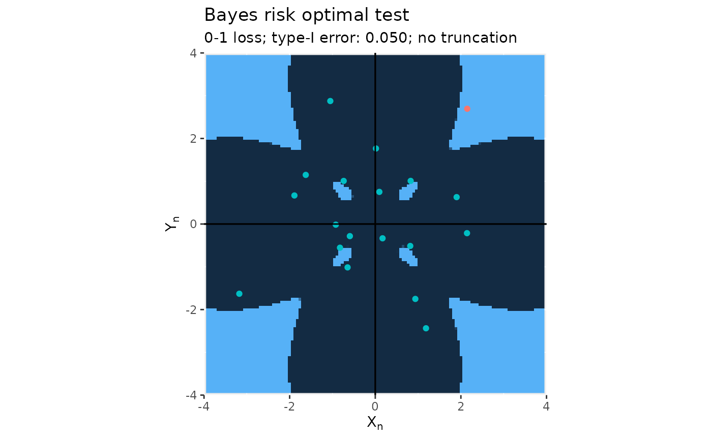
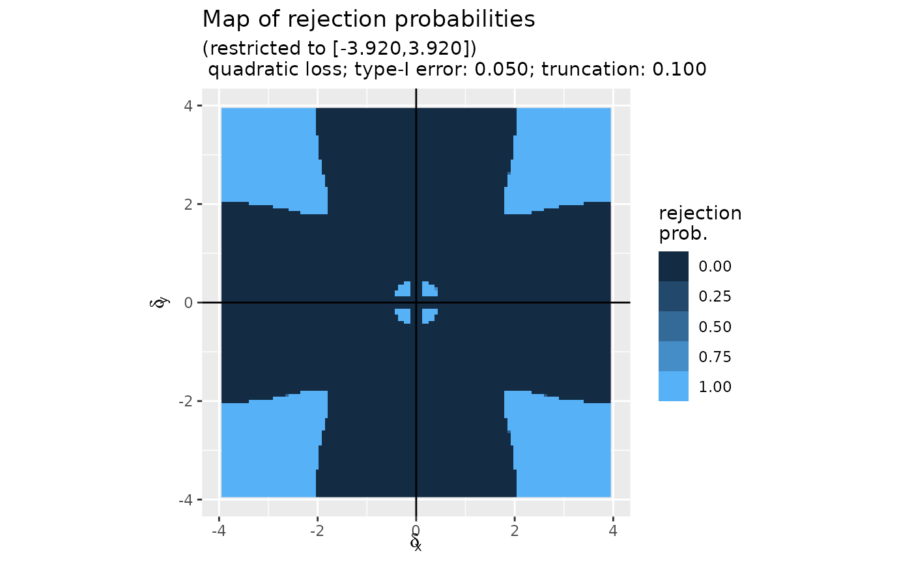
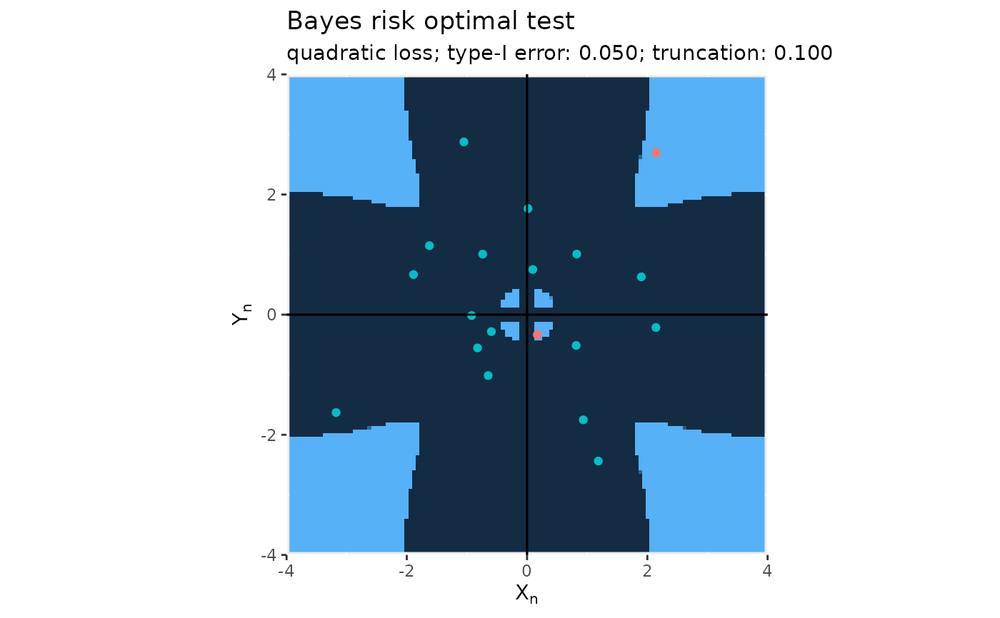

Bayes risk optimal testing
mediation_test_Bayes.RdCarries out the Bayes risk optimal test of the composite null "\(\delta_x \times \delta_y=0\)" against its alternative "\(\delta_x \times \delta_y\neq 0\)" based on the test statistic in the real plane.
Arguments
- t
A
vectorconsisting of twonumerics, the test statistic in the real plane, or a 'n x 2'matrixof such test statistics.- map
The "map" of rejection probabilities – the 'map' item of the output of function
compute_map_rejection_probs.- sample_size
An
integer(larger than one), the size of the sample used to derive the test statistic. Defaults to 'Inf', meaning that, under the null hypothesis, the test statistic is drawn from the \(N_2(0,I_2)\) law. If the integer is finite, then, under the null hypothesis, the test statistic is drawn from the product of two Student laws with 'sample_size-1' degrees of freedom.- truncation
A nonnegative
numericused to bound the rejection region away from the null hypothesis space. Defaults to 0, in which case the rejection region is minimax optimal.
Value
A list, consisting of:
- t:
a
vectorof twonumerics, the test statistic, or a 'n x 2'matrixof such test statistics;- alpha:
a
numeric, the type-I error;- truncation:
a nonnegative
numeric, used to bound the rejection region away from the null hypothesis space- decision:
a
vectoroflogicals,FALSEif the null hypothesis can be rejected for the alternative at level 'alpha' andTRUEotherwise;- pval:
a
vectorofnumerics, the p-values of the tests, 'NA' in this case;- method:
the
character"Bayes";- map:
The "map" of rejection probabilities – the 'map' item of the output of function
compute_map_rejection_probs.
Details
For details, we refer to the technical report "Optimal Tests of the Composite Null Hypothesis Arising in Mediation Analysis", by Miles & Chambaz (2024), https://arxiv.org/abs/2107.07575
Examples
n <- 10
x <- MASS::mvrnorm(2 * n, mu = c(0, 0), Sigma = diag(c(1, 1)))
delta <- matrix(stats::runif(4 * n, min = -3, max = 3), ncol = 2)
epsilon <- stats::rbinom(n, 1, 1/2)
delta <- delta * cbind(c(epsilon, rep(1, n)),
c(1 - epsilon, rep(1, n)))
x <- x + delta
(mt_01_0.05 <- mediation_test_Bayes(x, map = map_01_0.05))
#> Testing the composite null 'delta_x * delta_y = 0' against its alternative 'delta_x * delta_y != 0':
#> * method:
#> Bayes
#> * test statictic:
#> [,1] [,2]
#> [1,] 1.18499459 -2.4372636
#> [2,] -0.73777632 1.0076532
#> [3,] -1.88850493 0.6674544
#> [4,] -1.62351863 1.1484116
#> [5,] 0.93584735 -1.7510698
#> [6,] 0.01595031 1.7659893
#> ...
#> * wished type-I error:
#> [1] 0.05
#> * loss function:
#> [1] "0-1"
#> * user-supplied truncation parameter:
#> [1] 0
#> * decision [1 rejection(s) overall]:
#> cannot reject the null for its alternative with confidence 0.050
#> cannot reject the null for its alternative with confidence 0.050
#> cannot reject the null for its alternative with confidence 0.050
#> cannot reject the null for its alternative with confidence 0.050
#> cannot reject the null for its alternative with confidence 0.050
#> cannot reject the null for its alternative with confidence 0.050
#> ...
#> * (conservative) p-value:
#> [1] NA
#> ...
plot(mt_01_0.05)

#> Some points fall outside the range of the figure.

(mt_quad_0.05_0.1 <- mediation_test_Bayes(x, map = map_quad_0.05_0.1))
#> Warning: Argument 'truncation' in call to 'mediation_test_Bayes' (0.000000) differs from the one attrached to the provided map (0.100000). Using the first one...
#> Testing the composite null 'delta_x * delta_y = 0' against its alternative 'delta_x * delta_y != 0':
#> * method:
#> Bayes
#> * test statictic:
#> [,1] [,2]
#> [1,] 1.18499459 -2.4372636
#> [2,] -0.73777632 1.0076532
#> [3,] -1.88850493 0.6674544
#> [4,] -1.62351863 1.1484116
#> [5,] 0.93584735 -1.7510698
#> [6,] 0.01595031 1.7659893
#> ...
#> * wished type-I error:
#> [1] 0.05
#> * loss function:
#> [1] "quadratic"
#> * user-supplied truncation parameter:
#> [1] 0
#> warning: used a truncation parameter (0.000) different from the map's truncation parameter (0.100)
#> * decision [2 rejection(s) overall]:
#> cannot reject the null for its alternative with confidence 0.050
#> cannot reject the null for its alternative with confidence 0.050
#> cannot reject the null for its alternative with confidence 0.050
#> cannot reject the null for its alternative with confidence 0.050
#> cannot reject the null for its alternative with confidence 0.050
#> cannot reject the null for its alternative with confidence 0.050
#> ...
#> * (conservative) p-value:
#> [1] NA
#> ...
plot(mt_quad_0.05_0.1)

#> Some points fall outside the range of the figure.
